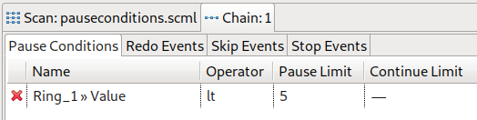
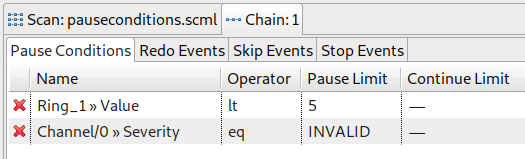
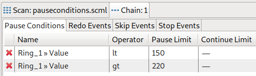
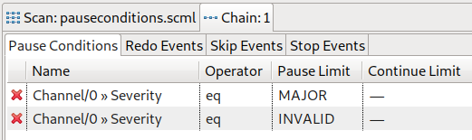

Each chain can have zero or more pause conditions. A pause condition is a definition based on a device, an operator and a limit evaluating to true or false, e.g. a value of a device is equal to a given constant. All pause conditions in a chain define an inhibit-state, i.e. if any of the definitions evaluates to true, execution is inhibited (the chain is paused) until all definitions evaluate to false.
Consider the following definition of a device value with operator lt (less than) and pause limit:

A chain containing the above definition will execute as long as the value of the given device is greater than or equal to five. If it drops below five, the chain will pause as long as it stays below five.
Consider the following definition of a device value with operator lt (less than) and pause limit and another device severity with operator eq (equals) and (discrete) pause limit INVALID:

A chain containing the above definitions will execute as long as neither the device value is less than five nor the other device severity is equal to INVALID. Since the conditions define an inhibit state, one violation (i.e. one condition evaluating to true) is sufficient for the chain to be paused. Only if all defined conditions (re-)evaluate to false the chain will execute/continue execution.
It is possible to add multiple definitions for the same device. To define an interval a certain value should be in where the chain executes and pauses otherwise, consider the following definition:

Only if the value of the defined device is within 150 and 220 the chain executes. If it is less than 150 or greater than 220 the chain pauses.
Another use case where adding multiple definitions for the same device would be if the device is discrete, has more than three values and two or more should be excluded. Consider the following definition:

If the value of the defined device gets MAJOR or INVALID the chain will pause. An EPICS severity also has the possible values of NO_ALARM and MINOR, which in this case result to executing the chain.
For any pause condition a hysteresis can be defined, i.e. besides the pause limit which alongside the operator defines when the condition evaluates to true (induce pause state) a second value, the continue limit can be set to enforce the expression to evaluate to false regarding that value.
Consider the following definition of a device value with operator lt (less than), pause limit and (different) continue limit:
The chain will pause any time the given value is less than five. But (in contrast to the situation where no continue limit is set) it will resume only when the value is greater or equal to 100 (and not five).